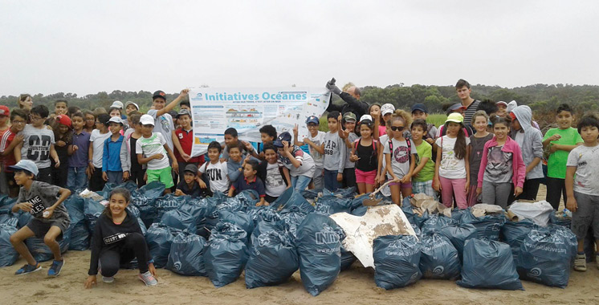
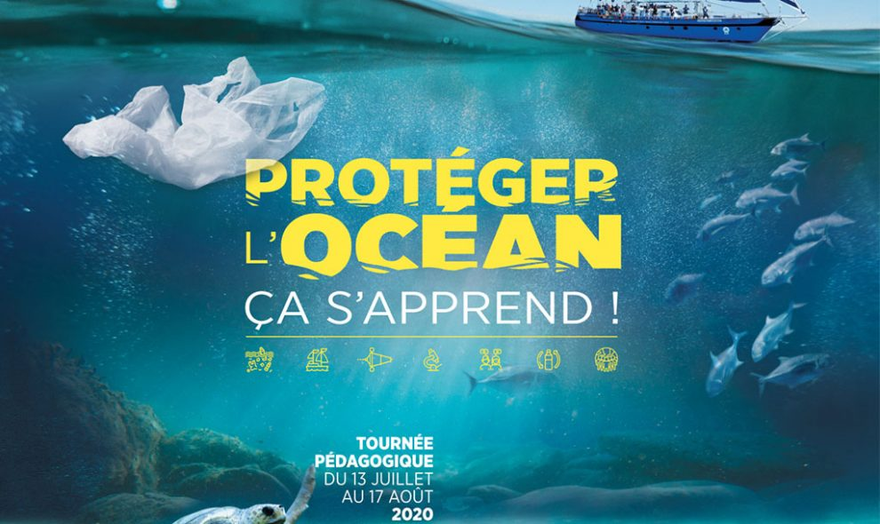

Rejoins-nous pour sauver l'océan
Lorsque le dernier arbre aura été abattu,
le dernier poisson pêché, la dernière rivière empoisonnée,
alors seulement nous réaliserons que
l’on ne peut pas manger de l’argent
Un plongeur nous a rappelé que toutes les salles de classe
n’ont pas quatre murs, et c’est dans cet esprit que nous
avons voulu partager quelques citations supplémentaires
que vous pouvez utiliser pour éduquer et inspirer
les autres sur l’importance de protéger nos océans.
Pour reprendre les mots de Robert Swan, OBE :



Nous avons récemment demandé aux abonnés PADI sur
Instagram de partager leurs citations préférées sur la plongée
et le monde sous-marin. Nous avons reçu des citations classiques
telles que né pour plonger, contraint de travailler et
continue de nager, mais nous avons également vu un grand
nombre de citations sur la protection de l’océan.